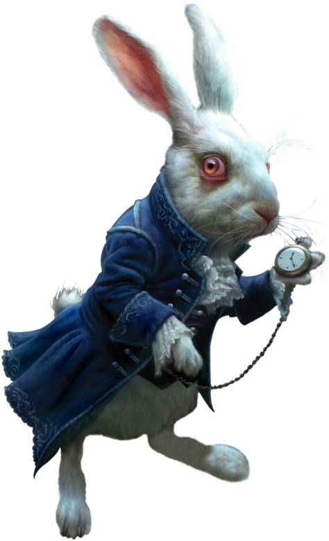

Vous tombez plus profondément dans le Pays des Merveilles et trouvez un parchemin étrange intitulé "run_me.sh". Mais hélas, le Chapelier Fou vous dit :
"Il est silencieux car personne ne lui a dit de parler. Peut-être qu'il n'y est pas autorisé ?"